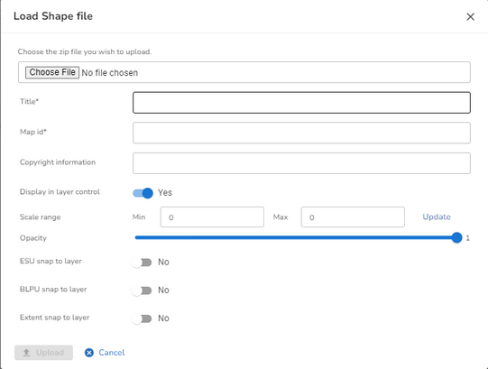

You may wish to display one of your own map layers in the Map pane of iManage Cloud. This can be useful if you have existing geometry that you wish to use for creating new streets (ESUs) or maybe polygons for provenance extents. Currently this is limited to uploading Esri Shape files. First you need to add all the files that make up your Shape file (e.g. .dbf, .prj, .shp & .shx) to a Compressed zip folder.
Once you have the files in a Compress zip folder you can now upload your file.
•Select the Upload shp file tool on the toolbar e.g. 

•Click the Choose File button to pick your compressed zip folder.
•Enter a Title for your map layer. The Map id is automatically populated with the file name.
•The rest of the details are not mandatory so, if you wish to display copyright information you can enter it here.
•Now decide if you want the layer to be added to the map Layer Control and the Scale range the minimum scale (most zoomed out) and maximum scale (most zoomed in) at which the layer is visible in the Map pane.
•You can also select the various different snapping options i.e. if your layer contains polylines then you may wish to switch on ESU snap to layer and if it contains polygons then Extent snap to layer.
•Once you are happy with your options click Upload and the layer is uploaded to the map.